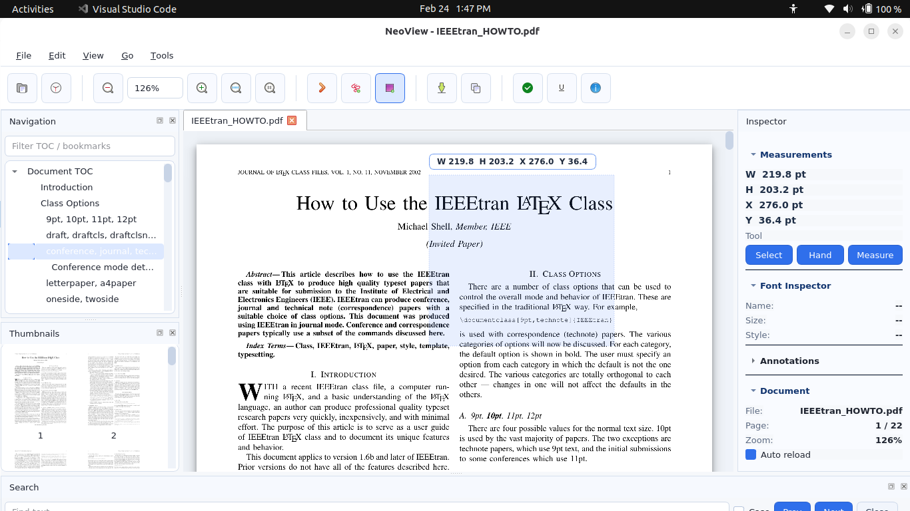
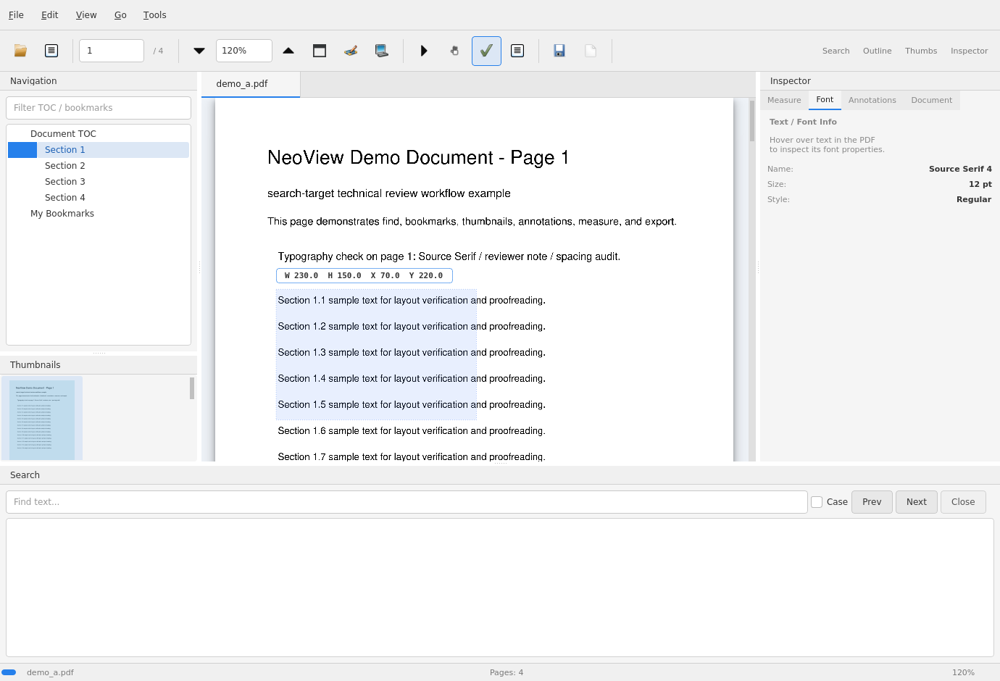
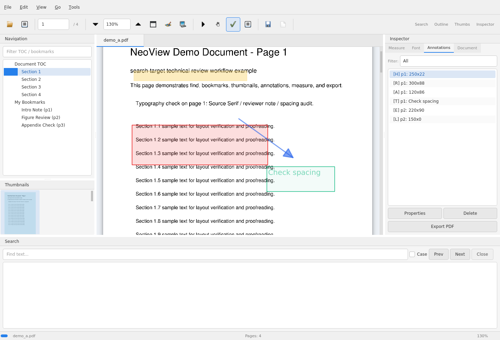

NeoView
Technical PDF viewer for search, annotation, measurement, and live reload
Built for LaTeX, proofreading, QA, and document review with tabs, find, bookmarks, thumbnails, annotations, PNG export, and annotated PDF export.

Technical PDF viewer for search, annotation, measurement, and live reload
Built for LaTeX, proofreading, QA, and document review with tabs, find, bookmarks, thumbnails, annotations, PNG export, and annotated PDF export.
Search, inspect, annotate, and measure technical PDFs without leaving one viewer

Selection rectangles with live dimensions in pt, picas, and mm plus PNG export at multiple DPI levels

Font inspection, live find, current-match highlighting, and per-tab document state

Create highlights, notes, shapes, arrows, and freehand markup, then export a PDF copy with embedded annotations
A practical viewer for PDF-heavy editing, review, and inspection workflows
Automatically refreshes when your PDF is rebuilt, keeping page position, annotations, and search state aligned with ongoing LaTeX or generated-PDF work.
Draw, move, resize, and fine-tune selections with mouse or keyboard, then inspect exact dimensions in points, picas, and millimeters.
Use live find, bookmarks, thumbnails, and outline navigation while reviewing PDFs, then add highlights, notes, shapes, arrows, text boxes, and freehand markup.
| Feature | NeoView | SumatraPDF | Adobe Acrobat | Evince |
|---|---|---|---|---|
| Auto-reload on file change | ✓ | ✓ | ✗ | ✓ |
| Measurement tools (pt/mm) | ✓ | ✓ | ✓ | ✗ |
| Font name/size inspection | ✓ | ✗ | ✓ | ✗ |
| Export selection as PNG | ✓ | ✗ | ✓ | ✗ |
| Bookmarks + thumbnails + outline | ✓ | ✗ | ✓ | ✓ |
| Canvas and sidecar annotations | ✓ | ✗ | ✓ | ✗ |
| Linux native | ✓ | ✗ | ✗ | ✓ |
| Windows native | ✓ | ✓ | ✓ | ✗ |
| Lightweight & fast | ✓ | ✓ | ✗ | ✓ |
| Open source | ✓ | ✓ | ✗ | ✓ |
| Docker/container support | ✓ | ✗ | ✗ | ✗ |
Core reader features plus practical review and inspection tools
Watches file changes and refreshes automatically. Page position, search state, and viewer context stay aligned during rebuild-heavy workflows.
Click and drag to create precise rectangles, then move or resize them with handles and keyboard nudges.
Use live search, next/previous match navigation, and highlighted results without leaving the document.
Jump through the PDF using the document TOC, your own bookmarks, and filtered navigation panels.
Work across multiple open PDFs with thumbnails, per-tab state, and smart reuse of already-open files.
Fit Width, Fit Page, Actual Size, Ctrl+wheel, pinch zoom, and rotation controls for detailed review.
Create highlights, underline, notes, shapes, arrows, text boxes, and freehand drawings directly on the canvas.
Save a copy of the current PDF with your NeoView annotations embedded into the exported file.
See annotations already embedded in the source PDF alongside your own sidecar-managed annotations.
Export any selected area as a high-quality PNG at 150, 300, or 600 DPI.
Reduce expensive rerenders while zooming and scrolling through larger documents.
Linux and Windows support, optional desktop integration, and container-friendly execution for controlled environments.
Choose your platform
Download the standalone executable with the full viewer, annotation, and navigation toolset. No Python required.
Download latest neoview.exepy -m pip install neoview
Then launch with: neoview
py -m pip install .[dev]
pyinstaller neoview.spec
The executable will be at dist\neoview.exe
pip install neoview
Launch with: neoview or neoview /path/to/file.pdf
Create a desktop shortcut for easy access:
git clone https://github.com/Srikanth-Mohankumar/neoview.git
cd neoview
pip install .
./install_desktop.sh
docker build -t pdf-measure .
docker run -it --rm \
-e XDG_RUNTIME_DIR=/run/user/$(id -u) \
-e WAYLAND_DISPLAY=$WAYLAND_DISPLAY \
-e QT_QPA_PLATFORM=wayland \
-v $XDG_RUNTIME_DIR/$WAYLAND_DISPLAY:/run/user/$(id -u)/$WAYLAND_DISPLAY \
-v /path/to/pdfs:/pdfs \
pdf-measure /pdfs/document.pdf
xhost +local:docker
docker run -it --rm \
-e DISPLAY=$DISPLAY \
-e QT_QPA_PLATFORM=xcb \
-v /tmp/.X11-unix:/tmp/.X11-unix \
-v /path/to/pdfs:/pdfs \
pdf-measure /pdfs/document.pdf
Core shortcuts for navigation, search, review, and annotation